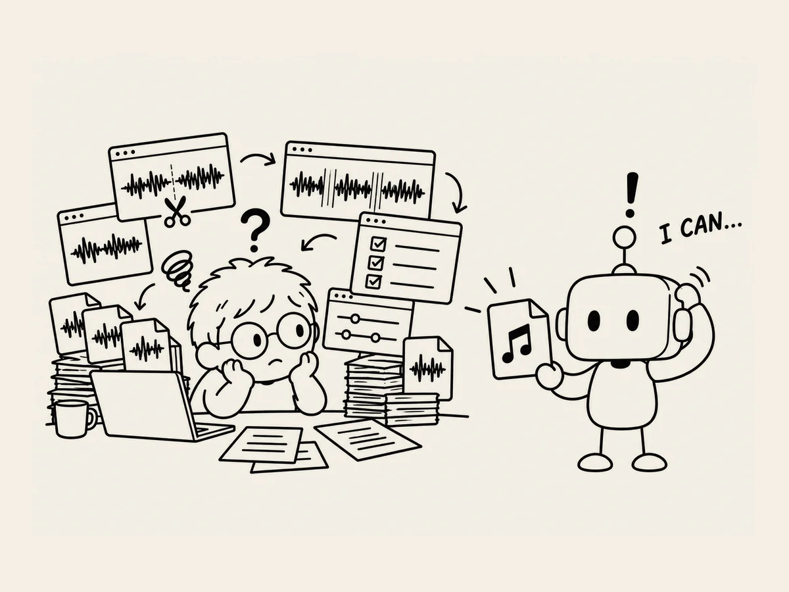

22.
Il n’y a pas moyen de faire tout ça d’un seul coup ?
Je travaillais sur les sons.
Le processus était compliqué.
Créer le son.
Assembler les morceaux.
Adoucir les raccords.
Vérifier à nouveau.
Il fallait passer par plusieurs étapes
rien que pour créer correctement un seul son.
Même vérifier que le fichier final était bien fait
était compliqué.
Je devais lancer plusieurs programmes
et vérifier chaque étape.
Je continuais à faire
ce que l’IA me disait de faire.
Mais au bout de quelques jours,
ça a commencé à m’agacer.
Alors, sans vraiment y réfléchir,
j’ai demandé :
« Il n’y a pas moyen de faire tout ça d’un seul coup ? »
L’IA m’a expliqué plusieurs méthodes.
J’ai demandé encore une fois :
« Non, mais tu ne peux pas simplement
créer le bon son dès le départ ? »
« Oui. C’est possible. »
Hein ?
Attends.
« Alors, fais-le. »
Un peu plus tard,
le fichier était prêt.
Je l’ai écouté.
Ça marche.
Et ça n’avait pas pris beaucoup de temps.
Toutes les étapes que j’avais suivies jusque-là
juste pour créer un seul son
me sont revenues à l’esprit.
« Alors, qu’est-ce que j’ai fait
pendant tout ce temps ? »
